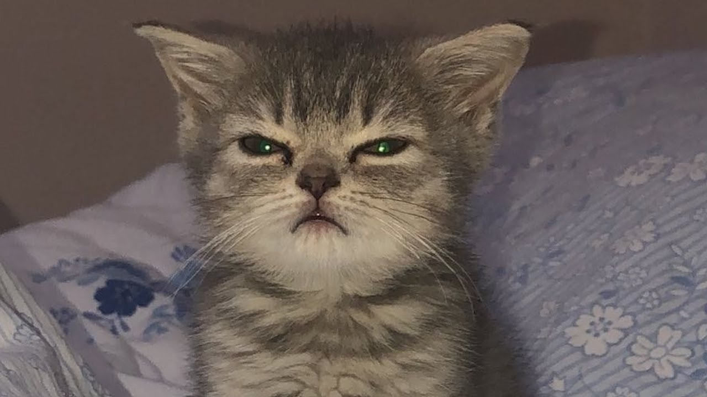
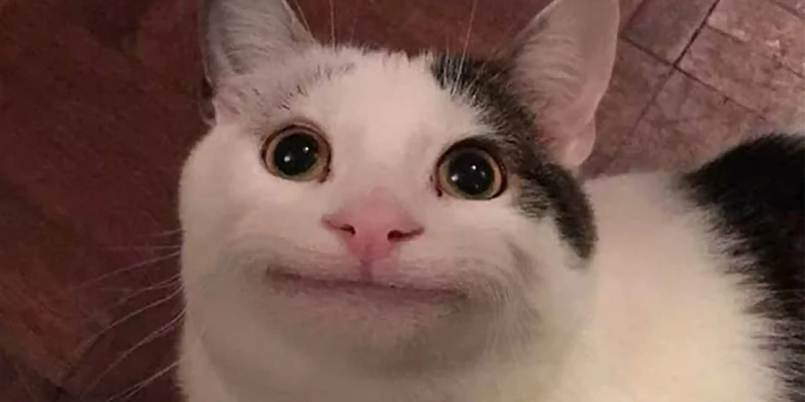

9a. Create a <div> and turn it into a red square
9b. Create a <div> and turn it into a green circle
9c. Recreate this design by wrapping the elements in a <div> and adding a border
Satisfied with out service?
9d. Recreate this design using a <div> with 2 paragraphs inside
Install Youtube Music
Add YouTube Music to your desktop for quick and easy access.
9e. Take the design created in a previous exercise. Wrap it in a <div> and give it a shadow.
9f. Recreate this design
Adrian bib
2 mutual friends
9g. For exercise 9f. set display: inline-block on the <div>, and duplicate the design a few times
Barbieque
143 mutual friends

Ippy bib
3 mutual friends

Chutie bib
5 mutual friends